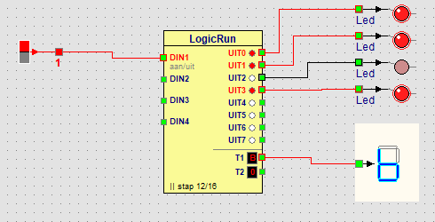

Leerpad › Voor gevorderden › Les 15 van 18

Een computer kent alleen aan (1) en uit (0). Met vier lampjes maak je toch 16 getallen: tel de waarden op van de lampjes die branden. Schrijf je ze op met de 8 links, dan krijg je het binaire getal.
| Getal | 8 | 4 | 2 | 1 | Binair | Display |
|---|---|---|---|---|---|---|
| 0 | 0 | 0 | 0 | 0 | 0000 | 0 |
| 1 | 0 | 0 | 0 | 1 | 0001 | 1 |
| 2 | 0 | 0 | 1 | 0 | 0010 | 2 |
| 3 | 0 | 0 | 1 | 1 | 0011 | 3 |
| 5 | 0 | 1 | 0 | 1 | 0101 | 5 |
| 9 | 1 | 0 | 0 | 1 | 1001 | 9 |
| 10 | 1 | 0 | 1 | 0 | 1010 | A |
| 11 | 1 | 0 | 1 | 1 | 1011 | B |
| 15 | 1 | 1 | 1 | 1 | 1111 | F |
Na 9 heeft het display geen cijfer meer: 10 tot 15 worden de letters A tot F. Zo’n getal heet hexadecimaal: één teken voor elke groep van vier bits.
Laat het display aftellen van 9 naar 0, en laat het daarna stoppen.
Verwijder met - stap stappen tot je er 10 over hebt. Klik in de kolom T1 van stap 1 en kies 9, bij stap 2 8, … tot stap 10 0. LogicRun zet zelf de juiste leds aan. Haal het vinkje bij Herhalen weg: na de laatste stap blijft het programma staan.
Het display toont A tot F, maar wij schrijven liever 10 tot 15. Zet een tweede display links van het eerste en verbind het met T2. Laat het tellen van 00 tot 15.
T2 is het cijfer van de tientallen, T1 dat van de eenheden. Laat stap 1 tot 10 zoals ze zijn (T2 = 0, T1 = 0 tot 9). Kies in stap 11 tot 16 bij T2 een 1 en bij T1 0, 1, 2, 3, 4 en 5. Zo toont het display 10 tot 15. In het venster zie je dat T2 = 1 de uitgang UIT4 aanzet: die heeft de waarde 1 voor het tweede cijfer.